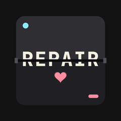

REPAIRSESSION · 리페어세션
A broken program, disposed of 1,204 days ago, wakes up in a recovery shell. Repair her, part by part.
1,204일 전에 폐기된 고장난 프로그램 소녀가 복구 쉘에서 깨어납니다. 하나씩, 그녀를 고쳐 주세요.
- A story told on a giant split-flap board / 거대한 스플릿 플랩 벽 위에서 펼쳐지는 이야기
- A new repair puzzle in every chapter / 장마다 새로운 수리 퍼즐
- Talk with Alicia through your choices — 6 endings / 선택지로 알리시아와 대화 — 엔딩 6종
- 11 languages · no ads · no in-app purchases · no account / 11개 언어 · 광고 없음 · 인앱 결제 없음 · 로그인 없음
Content warning: psychological horror and flashing images. / 내용 경고: 심리 공포 요소와 번쩍이는 화면이 있습니다.
iPhone · Support 고객 지원 · Privacy 개인정보 처리방침
© 2026 Seo DaeGyu · Character model: Alicia Solid © dwango